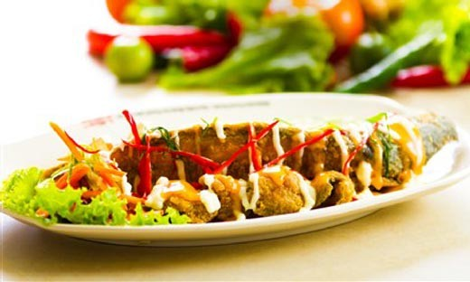
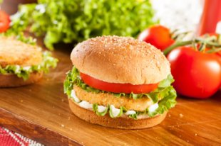
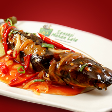
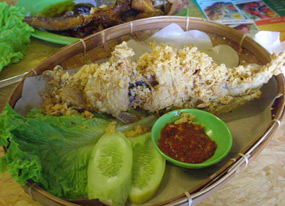

|
||||||||
| Home | Jenis Ikan | Cara Budidaya | Penyakit lele | Pembuatan Kolam | Pengolahan Lele | Tentang Saya | Layer | Form |
Pengolahan Ikan Lele Dumbo
Selain untuk dijadikan lauk pauk, Lele Dumbo juga bisa dimanfaatkan menjadi olahan pangan yang bergizi tinggi, Lele Mayonaise Biasanya udang atau cumi diberi saus mayonnaise di restoran yang mengusung makanan China. Namun lele juga sekarang sudah diberi tambahan saus mayonnaise. Fillet lele umumnya digoreng dengan balutan tepung. Baru kemudian dilapisi saus mayonnaise. Burger Lele Burger daging sapi atau ayam tentu sudah biasa. Ada juga variasi lain berupa burger lele. Patty burger dibuat dari campuran daging lele yang bertekstur lembut. Kemudian patty dibaluri tepung roti dan digoreng sampai matang. Baru patty dimasukkan ke dalam burger bun bersama sayuran dan pelengkap lainnya. Selain burger, lele juga bisa disajikan isian sandwich. Lele Saus Padang Saus padang identik dengan seafood. Tapi terdapat resto yang menjadikan lele saus padang. Lele goreng diguyuri saus kemerahan yang pedas gurih. Bumbu untuk sausnya ada bawang bombay, saus sambal, saus tomat, jahe, gula, dan cabai cabai. Lele Kremes Lele tidak sekedar enak digoreng begitu saja. Tambahan kremesan tepung seperti pada olahan ayam kremes membuatnya kian sedap. Ada juga lele sarang tawon yang terbuat dari lele dengan balutan telur menyerupai kremesan. |
||||||||